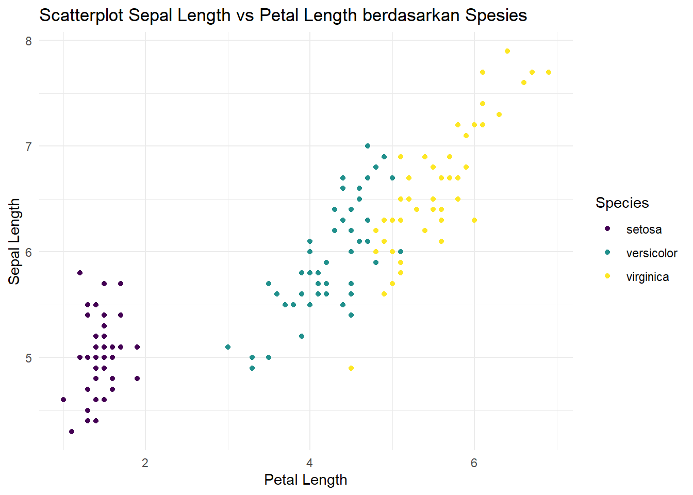
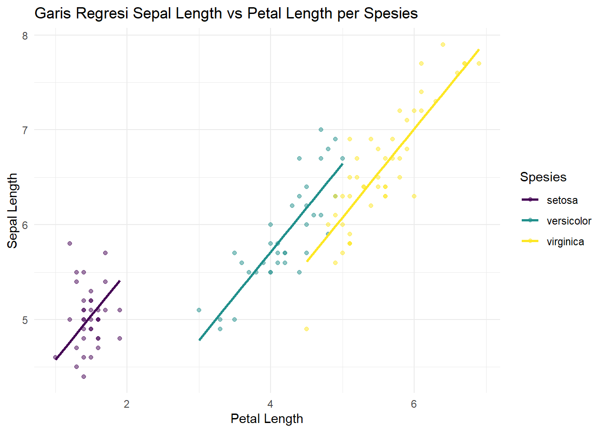

Pada modul sebelumnya, kita telah mempelajari cara memodelkan regresi linear sederhana dengan satu variabel prediktor numerik. Namun, pada aplikasi permasalahan nyata, seringkali kita dihadapkan pada data yang memuat lebih dari satu jenis variabel, termasuk variabel kategorik.
Pada modul ini, akan dibahas tentang tahapan awal analisis regresi, dimulai dari tahap pre-processing, eksplorasi data, pemisahan data (data splitting), dan interpretasi output model regresi untuk mengevaluasi signifikansi dan akurasi model. Hal ini mencakup pengolahan data, analisis dan interpretasi hasil.
Pertama, kita dapat load kembali library dan data yang akan digunakan. Kita akan kembali menggunakan dataset iris.
library(tidyverse)
── Attaching core tidyverse packages ──────────────────────── tidyverse 2.0.0 ──
✔ dplyr 1.2.0 ✔ readr 2.2.0
✔ forcats 1.0.1 ✔ stringr 1.6.0
✔ ggplot2 4.0.2 ✔ tibble 3.3.1
✔ lubridate 1.9.5 ✔ tidyr 1.3.2
✔ purrr 1.2.1
── Conflicts ────────────────────────────────────────── tidyverse_conflicts() ──
✖ dplyr::filter() masks stats::filter()
✖ dplyr::lag() masks stats::lag()
ℹ Use the conflicted package (<http://conflicted.r-lib.org/>) to force all conflicts to become errors
library(psych)
Attaching package: 'psych'
The following objects are masked from 'package:ggplot2':
%+%, alpha
data(iris)df <- iris
Pre-processing dan Analisis Deskriptif
Sebelum melakukan pemodelan, langkah pertama yang sangat penting adalah memahami karakteristik data. Langkah ini dilakukan dengan melakukan pre-processing dan analisis deskriptif. Langkah ini bertujuan untuk mengidentifikasi apakah terdapat masalah pada data (seperti missing values) dan melihat distribusi variabel.
Pengecekan dan Tipe Data
Kita harus memastikan variabel yang akan digunakan memiliki tipe data yang tepat, khususnya untuk variabel kategorik. Di R, variabel kategorik harus direpresentasikan sebagai factor. Jika diperlukan, lakukan pre-processing data terlebih dahulu.
Perhatikan bahwa pada dataset iris, variabel Species sudah bertipe factor dan tidak ada missing value, sehingga kita bisa langsung lanjut ke tahap eksplorasi. Jika pada dataset Anda ternyata variabel kategorik tertentu belum bertipe factor, maka dapat dilakukan:
df$kolom_anda <-factor(df$kolom_anda)
Eksplorasi dan Visualisasi
Eksplorasi dan visualisasi data merupakan salah satu langkah dari analisis deskriptif. Tujuannya adalah untuk mengetahui karakteristik dan pola-pola khusus dari data yang dimiliki. Karakteristik-karakteristik ini bisa membantu kita untuk memodelkan hubungan antar variabel dengan lebih akurat.
Misal, kita ingin memodelkan Sepal.Length (sebagai variabel respon) menggunakan Petal.Length (numerik) dan Species (kategorik) sebagai prediktor.
Kita dapat membuat scatterplot yang membedakan warna titik berdasarkan kategori Species.
ggplot(df, aes(x = Petal.Length, y = Sepal.Length, color = Species)) +geom_point() +scale_color_viridis_d() +labs(title ="Scatterplot Sepal Length vs Petal Length berdasarkan Spesies",x ="Petal Length",y ="Sepal Length") +theme_minimal()

Dari visualisasi di atas, kita bisa merumuskan hipotesis awal bahwa Petal.Length berkorelasi positif dengan Sepal.Length, dan terdapat perbedaan level (intersep) untuk masing-masing Species.
Pemisahan Data (Data Splitting)
Dalam melakukan evaluasi model, praktek yang baik adalah memisahkan data menjadi data latih (train data) dan data uji (test data). Lakukan fit regresi mengunakan 80% dari data yang ada. Sampel 80% data ditentukan secara acak.
Untuk melakukan pengambilan sampel acak yang reproducible (hasilnya selalu sama tiap kali di-run), gunakan fungsi set.seed().
set.seed(2026) # Gunakan angka bebas sebagai seedn_total <-nrow(df)n_train <-round(0.80* n_total)index_train <-sample(1:n_total, n_train)data_1 <- df[index_train, ] # 80% data latihdata_test <- df[-index_train, ] # Sisa 20% datawrite_csv(data_1, "Data_1.csv")head(data_1, 10)
Sekarang kita akan mengajukan model regresi berganda dengan melibatkan dummy variables untuk memfasilitasi variabel kategorik. Karena Species memiliki 3 level (setosa, versicolor, virginica), R secara otomatis akan membuat \(k-1 = 2\) variabel dummy.
\(X_{2B}\) adalah dummy untuk Speciesversicolor (1 jika versicolor, 0 lainnya)
\(X_{2C}\) adalah dummy untuk Speciesvirginica (1 jika virginica, 0 lainnya)
\(\varepsilon \sim N(0, \sigma^2)\) adalah asumsi error yang berdistribusi normal.
Alasan kita mengajukan model ini adalah untuk mengevaluasi apakah pengaruh Petal.Length terhadap Sepal.Length tetap konsisten, dan seberapa besar perbedaan yang diberikan oleh masing-masing jenis spesies.
Pengolahan data dan analisis hasil
Mari kita lakukan fit regresi menggunakan 80% data latih (data_1).
model_1 <-lm(Sepal.Length ~ Petal.Length + Species, data = data_1)summary(model_1)
Call:
lm(formula = Sepal.Length ~ Petal.Length + Species, data = data_1)
Residuals:
Min 1Q Median 3Q Max
-0.71283 -0.21956 -0.01342 0.21550 1.03781
Coefficients:
Estimate Std. Error t value Pr(>|t|)
(Intercept) 3.64386 0.11153 32.672 < 2e-16 ***
Petal.Length 0.93194 0.06614 14.091 < 2e-16 ***
Speciesversicolor -1.65819 0.19537 -8.487 8.02e-14 ***
Speciesvirginica -2.22476 0.27956 -7.958 1.30e-12 ***
---
Signif. codes: 0 '***' 0.001 '**' 0.01 '*' 0.05 '.' 0.1 ' ' 1
Residual standard error: 0.3263 on 116 degrees of freedom
Multiple R-squared: 0.8553, Adjusted R-squared: 0.8515
F-statistic: 228.5 on 3 and 116 DF, p-value: < 2.2e-16
Berdasarkan outputsummary(model_1), kita dapat menjawab beberapa pertanyaan analitik penting:
1. Taksiran Persamaan Regresi
Taksiran koefisien dapat dilihat pada kolom Estimate di bagian Coefficients. Taksiran persamaannya adalah:
\(H_1 :\) Setidaknya ada satu \(\beta_j \neq 0\) (Model berguna)
Lihat pada baris paling bawah output: F-statistic: 228.5 dengan p-value: < 2.2e-16. Karena p-value sangat kecil (\(< 0.05\)), kita tolak \(H_0\). Kesimpulannya, model yang diajukan berguna/fit pada data.
3. Akurasi Model
Akurasi model dapat dijelaskan menggunakan Multiple R-squared (\(R^2\)). Pada output, nilai \(R^2 = 0.8553\). Artinya, sebesar \(85.53\%\) variansi dari variabel target (Sepal.Length) dapat dijelaskan oleh model menggunakan prediktor Petal.Length dan Species. Semakin mendekati 1, akurasi model dalam menjelaskan data training semakin baik.
4. Peran dan Signifikansi Variabel Prediktor
Besarnya peran dari variabel prediktor terhadap variabel target dan signifikansi variabel prediktor tersebut dalam menjelaskan variabel target dapat dijawab sebagai berikut:
Peran: Setiap kenaikan 1 satuan Petal.Length, Sepal.Length diestimasi naik sebesar \(0.93194\) satuan, dengan asumsi prediktor lain konstan.
Signifikansi: Lihat kolom Pr(>|t|) untuk masing-masing variabel. Nilai p-value untuk Petal.Length, Speciesversicolor, dan Speciesvirginica semuanya \(< 0.05\) (ditandai dengan ***). Hal ini menunjukkan bahwa peran dari masing-masing variabel prediktor tersebut adalah signifikan secara statistik dalam menjelaskan variabel target.
5. Taksiran Intersep dan Maknanya
Taksiran intersep (\(\hat{\beta}_0\)) pada model kita adalah \(3.64386\). Secara matematis, ini adalah taksiran rata-rata Sepal.Length ketika Petal.Length\(= 0\) dan spesiesnya adalah “setosa” (kategori baseline atau rujukan).
Apakah ini bermakna pada data? Dalam konteks bunga, tidak mungkin ada bunga yang memiliki panjang kelopak (Petal.Length) bernilai persis 0. Oleh karena itu, meskipun intersep ini diperlukan secara matematis untuk menyeimbangkan persamaan garis regresi, maknanya secara praktis di dunia nyata tidak relevan karena nilai \(X=0\) berada di luar jangkauan data (terjadi ekstrapolasi).
Visualisasi Garis Regresi Untuk Variabel Kategorik
Sebagai tambahan pemahaman, kita dapat memvisualisasikan bagaimana bentuk model regresi yang telah kita buat. Karena kita tidak menggunakan interaksi antara Petal.Length dan Species, model kita menghasilkan garis paralel (sejajar) untuk tiap kategori spesies. Slope (kemiringan) untuk ketiganya sama persis (\(0.93194\)), namun tinggi garisnya (intercept) akan berbeda tergantung spesiesnya.
Kita dapat membuat prediksi (fitted values) dari model, kemudian memplotnya ke dalam bentuk garis.
data_1$Predicted_Sepal_Length <-predict(model_1)# Membuat visualisasiggplot(data_1, aes(x = Petal.Length, color = Species)) +geom_point(aes(y = Sepal.Length), alpha =0.5) +geom_line(aes(y = Predicted_Sepal_Length), linewidth =1) +scale_color_viridis_d() +labs(title ="Garis Regresi Sepal Length vs Petal Length per Spesies",x ="Petal Length",y ="Sepal Length",color ="Spesies") +theme_minimal()

Evaluasi pada Data Test
Langkah terakhir adalah melihat bagaimana model regresi yang kita latih pada 80% data (data_1) bekerja apabila diterapkan pada 20% data sisa (data_test). Karena kita tidak mem-fit model baru pada data uji, kita tidak bisa memanggil fungsi summary(). Sebagai gantinya, kita akan menghitung metrik evaluasi seperti RMSE (Root Mean Squared Error) dan Test R-squared untuk mengukur akurasi prediksinya.